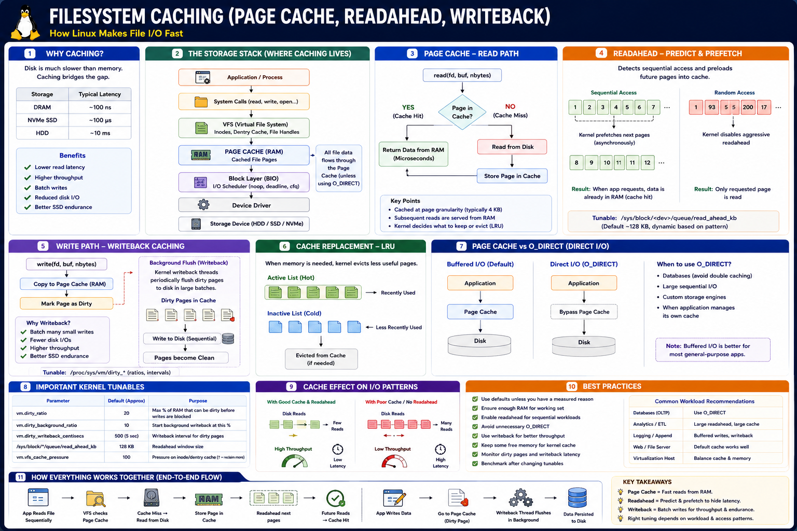

How Linux accelerates file I/O, hides disk latency, and batches writes
The Big Picture
Disks are thousands to millions of times slower than RAM. Without caching, every file read would stall waiting for disk I/O. Linux uses filesystem caching as the bridge between fast memory and slow storage.
CPU Cache
~1 ns
DRAM
~100 ns
NVMe SSD
~100 µs
HDD
~10 ms
Three Caching Mechanisms
Page Cache
Stores recently accessed file pages in RAM. Cache hits serve data at nanosecond latency instead of waiting for disk.
Readahead
Detects sequential access and prefetches future pages before the app requests them. Hides storage latency.
Writeback
Buffers writes as dirty pages and flushes them in large batches, improving throughput and SSD endurance.
Page Cache — Read Path
Cache Hit
Cache Miss
Applications never know whether data came from RAM or disk — VFS is transparent. The goal is to maximize the cache hit ratio for the working set.
Write Path & Dirty Pages
Dirty pages are in RAM but not yet on disk. A crash before writeback means that data is lost. Use fsync() to force immediate flush when durability is required.
Writeback — Batching for Throughput
Instead of one disk write per application write, Linux accumulates dirty pages and flushes in bulk:
Writeback converts random small writes into large sequential writes — dramatically improving SSD endurance (lower WAF) and HDD throughput.
Readahead — Sequential Prefetch
The kernel detects sequential access patterns and proactively loads future pages:
Sequential (Aggressive)
Random (Conservative)
Cache Eviction — LRU
RAM is finite. The kernel evicts pages using an LRU-like two-list approach:
Page Cache vs Direct I/O (O_DIRECT)
| Mode | Uses Page Cache | Best For |
|---|---|---|
| Buffered I/O (default) | Yes | General apps, file servers, CDN |
O_DIRECT | No — bypasses cache | Databases with own buffer pool |
PostgreSQL, MySQL InnoDB, Oracle all use O_DIRECT for data files to avoid double buffering. WAL files may still use buffered I/O with explicit fsync.
Kernel Tunables
| Parameter | Purpose | Typical Value |
|---|---|---|
vm.dirty_ratio | Max dirty % of RAM before writes block | 20% |
vm.dirty_background_ratio | Trigger background flushing | 10% |
vm.dirty_writeback_centisecs | Flush interval (centiseconds) | 500 (5s) |
vm.dirty_expire_centisecs | Max dirty page age before flush | 3000 (30s) |
read_ahead_kb | Readahead window size per block device | 128–4096 KB |
vm.vfs_cache_pressure | Metadata cache aggressiveness | 100 |
Performance Characteristics by Mechanism
| Mechanism | Improves | Best Workload |
|---|---|---|
| Page Cache | Read latency | General apps, file servers |
| Readahead | Sequential throughput | Analytics, Streaming, Spark |
| Writeback | Write throughput | Logging, file uploads |
| O_DIRECT | Memory efficiency | Databases with buffer pools |
Real-World Examples
PostgreSQL
Uses its own Buffer Pool + O_DIRECT for data files. WAL uses buffered writes + explicit fsync for group commit. Avoids double buffering with kernel.
Kafka
Sequential append workload. Fully relies on Linux page cache + writeback. Large dirty buffers and readahead improve throughput significantly. Designed around OS caching.
Spark / Analytics
Large sequential scans across HDFS/S3. Benefits from large readahead window (4 MB+) and large page cache to avoid repeated disk I/O.
Nginx (CDN / Static Files)
Frequently accessed static assets stay hot in page cache. Requests served directly from RAM without any disk I/O. High cache hit ratio is critical.
Trade-offs
| Optimize For | Benefit | Cost |
|---|---|---|
| Large Page Cache | Lower read latency | More RAM consumed |
| Large Readahead | Fast sequential reads | Wasted I/O on random access |
| High dirty_ratio | High write throughput | Longer/larger flush spikes |
| Low dirty_ratio | Predictable write latency | More frequent small flushes |
| O_DIRECT | No double buffering | App must manage own cache |
Staff Engineer Thinking
Junior
What is the page cache?
Senior
Should we use O_DIRECT?
Staff asks
Production Failure Scenarios
Server Running Out of Memory
Cause: Page cache consuming all available RAM · Fix: Tune vm.vfs_cache_pressure or use O_DIRECT for workloads with their own buffer pools
Database Double Buffering
Cause: DB buffer pool + kernel page cache both caching same data · Fix: Enable O_DIRECT on data files (PostgreSQL: effective_io_concurrency, MySQL InnoDB default)
Periodic Write Latency Spikes
Cause: Large dirty_ratio → huge flush storm when threshold hit · Fix: Reduce vm.dirty_ratio for smoother, more frequent smaller flushes
Slow Sequential Reads
Cause: Default readahead too small for analytics workload · Fix: Increase read_ahead_kb on the block device (128 → 4096 KB)
Poor Cache Hit Ratio
Cause: Working set larger than available RAM · Fix: Add RAM, or use tiered caching (Redis for hot data) to reduce pressure on page cache
Staff Engineer Decision Framework
| Workload | Recommended Strategy |
|---|---|
| General Linux server | Default page cache (no tuning needed) |
| OLTP Database | O_DIRECT + DB buffer pool |
| Analytics / Spark | Large readahead + large page cache |
| Streaming / Kafka | Large page cache + writeback batching |
| Logging / File writes | Large dirty_ratio + writeback |
| CDN / Nginx static | Maximize page cache; tune cache pressure down |
| Memory-constrained | Reduce dirty_ratio, increase cache pressure |
Key Takeaways
